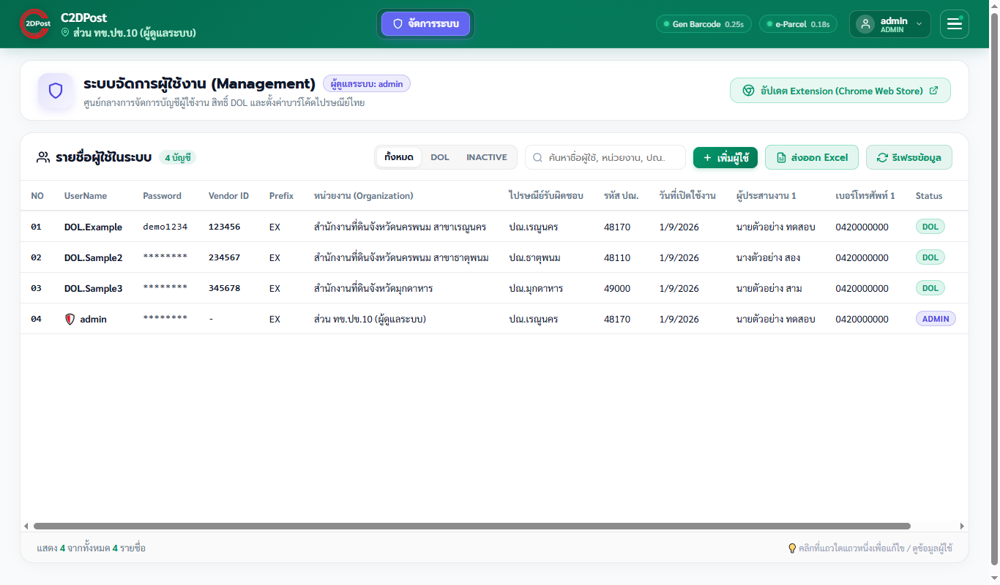
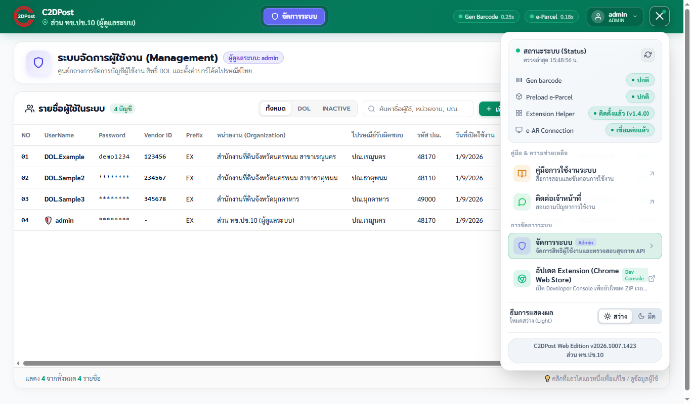

1. จัดการผู้ใช้

- อนุมัติ/เพิ่มผู้ใช้: กด เพิ่มผู้ใช้ หรือแก้ไขแถวคำขอที่ลงทะเบียนเข้ามา ตรวจชื่อผู้ใช้ e-Parcel, Vendor ID, หน่วยงาน และรหัส ปณ. รับผิดชอบให้ถูกต้อง
- แก้ไข/ลบ: ใช้ปุ่มท้ายแถว การลบมีผลทันทีและย้อนกลับไม่ได้
- ค้นหา/กรอง ตามสถานะ และ ส่งออก Excel รายชื่อผู้ใช้
รหัส ปณ. รับผิดชอบ (ResponsibleZipcode) กำหนดว่าบัญชีที่ทำการไปรษณีย์ใดจะเห็นพัสดุของหน่วยงานนี้
2. ตรวจสถานะระบบ

- เมนู ☰ แสดงสถานะ API, Extension, e-Parcel และ e-AR
- ระบบ e-AR มีปัญหา = Extension ปกติ แต่เซิร์ฟเวอร์ e-AR ของไปรษณีย์ตอบ HTTP 5xx ไม่ต้องแก้ฝั่งเรา
- ตรวจ API ได้ที่
/api/health
3. บัญชีที่ทำการไปรษณีย์และบันทึกการใช้งาน
- บัญชีถูกสร้างอัตโนมัติทุก ปณ.: ชื่อผู้ใช้
รหัสไปรษณีย์a1รหัสผ่านdรหัสไปรษณีย์ไม่ต้องเพิ่มในหน้าจัดการผู้ใช้ - ระบบใช้บัญชี e-Parcel ของแต่ละหน่วยงานแทนในการดึงข้อมูล จึงต้องรักษาข้อมูลบัญชีหน่วยงานให้ถูกต้อง
- การใช้งานทุกครั้งถูกบันทึกในแผ่นงาน PostOfficeLog (วันเวลา, บัญชี ปณ., การใช้งาน, รายละเอียด) ควรตรวจเป็นระยะว่ามีการใช้ผิดปกติหรือไม่ เช่น ดาวน์โหลดจำนวนมากนอกเวลาทำการ
4. การดูแลรักษา
- ข้อมูลผู้ใช้ รายการบาร์โค้ด (UseBarcode) และรายชื่อ ปณ. อยู่ใน Google Sheets ห้ามเปลี่ยนชื่อคอลัมน์หรือลำดับแผ่นงาน
- เมื่อแก้ Apps Script ต้อง Deploy เวอร์ชันใหม่ และถ้า URL เปลี่ยน ต้องแจ้งผู้พัฒนาให้อัปเดตในระบบ
- เมื่อปรับ Extension ต้องส่งเวอร์ชันใหม่ขึ้น Chrome Web Store และแจ้งผู้ใช้ให้อัปเดต
5. ข้อควรระวังด้านความปลอดภัย
- ห้ามแชร์ลิงก์ Google Sheets, URL ของ Apps Script หรือคู่มือนี้ให้บุคคลภายนอก
- รหัสผ่านบัญชี ปณ. เดาได้จากรูปแบบ จึงต้องอาศัยการตรวจบันทึกการใช้งานแทน
- ไม่ใช้บัญชีจริงของหน่วยงานในการทดสอบ และไม่ถ่ายภาพหน้าจอที่มีข้อมูลประชาชนไปเผยแพร่
- ถ้าพบการรั่วไหลของข้อมูล ให้ระงับบัญชีที่เกี่ยวข้องและรายงานผู้บังคับบัญชาทันที